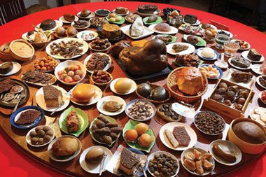

Cuisine

There are too many cuisines in Chinese cuisine and the Nanjing cuisine is also the same. I would introduce the top famous Nanjing dishes by the serving order of meal.
Tips: In fact, no one would have all of this dishes in this order, just a way to sort dishes by their category.